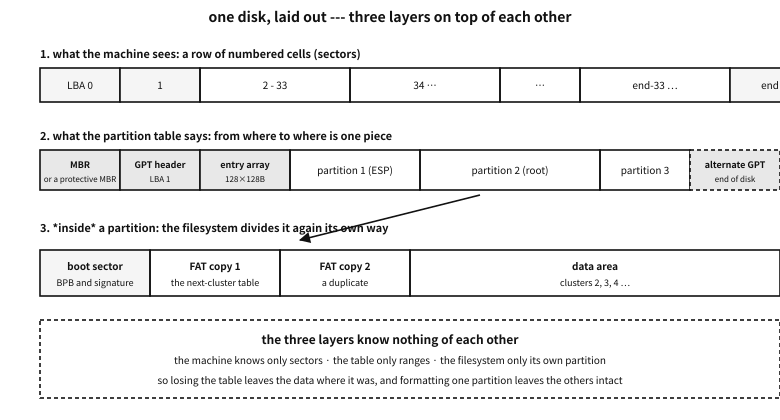
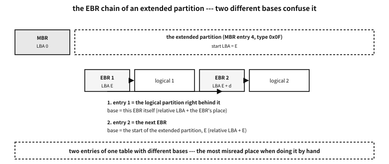
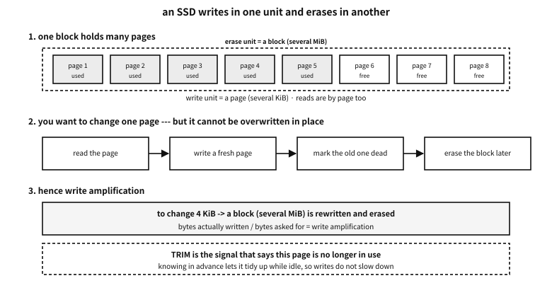

Appendix N — How a disk is divided
Using a computer you meet these words. “Partition the disk”, “format it”, “the MBR is damaged”, “you need to convert to GPT”. You half know what they mean, and usually go by without knowing what is actually written on the disk, and how.
This appendix opens those bytes. And by this book’s discipline, what the tables describe is actually built by an example and read back as evidence.
Platform note. what this appendix rests on, and its limits
The authorities for these structures are their specifications — for the MBR, convention and each operating system’s documentation; for GPT, the UEFI specification; for FAT, Microsoft’s FAT specification. What is written here belongs to their opening pages, and building real tools means reading the specifications.
This machine’s disk was not read. The discipline is to leave nobody’s machine circumstances in the document. Instead the examples build the bytes to the specification and decode them again.
Words to know first#
Only these words are used later. There is no need to memorise them now — come back to the table.
| Word | Meaning | By analogy |
|---|---|---|
| sector | the smallest cell a disk reads and writes; usually 512 bytes | one line of a notebook |
| LBA | the number given to a sector, from 0 (logical block addressing) | the line number |
| CHS | the old way of naming a place by cylinder, head and sector | “volume, page, line” |
| partition | one piece the disk is divided into. Merely “from this sector, this many” | a divider drawn in the notebook |
| partition table | the list of those dividers, written at the front of the disk | the contents page |
| volume | what the operating system treats as one storage space | “the D drive” |
| filesystem | how files and folders are managed inside a partition (FAT32, ext4 …) | the tidying rules within a section |
| format | writing a filesystem’s basic structures afresh inside a partition | clearing a section and ruling a new form |
| mount | attaching that filesystem somewhere in the operating system | laying the section open on the desk |
Table 105.1 — The words used in this appendix
A common misconception. formatting erases the data
A disk is a row of numbered cells#
What the machine knows is very simple. A disk is a row of sectors, and each sector has a number from 0. “Read sector 3”, “write these 512 bytes to sector 7” — that is effectively all the device knows.
Partitions and filesystems are laid on that row by convention. The disk does not know how it is divided.

Figure 105.1 — Three layers on one disk — the row of sectors, the partition table, the filesystem.
Places used to be named by CHS: cylinder, head, sector. Names from when a disk really was several platters. Now everything is LBA — just a number.
| Called | Physical sector | Logical sector | What changes |
|---|---|---|---|
| 512n | 512 bytes | 512 bytes | old disks. The two agree |
| 512e | 4096 bytes | 512 bytes | inside it is 4 KiB while pretending to be 512 — misalignment makes it slow |
| 4Kn | 4096 bytes | 4096 bytes | 4 KiB with nothing hidden. Some older software cannot read it |
Table 105.2 — Three kinds of sector size
Q. Why is misalignment slow on 512e?
A. The disk really works in 4 KiB chunks, so if software writes 512 bytes at a misaligned place, the device must read 4 KiB, change 512 bytes inside it, and write 4 KiB back (read-modify-write). One write becomes three pieces of work. Today’s convention of starting partitions at sector 2048 (= 1 MiB) exists to avoid this.
Why divide at all#
Can a disk not be used whole? Sometimes it can. But there are reasons to divide.
- Several operating systems together. Each uses its own filesystem.
- Separating data of different character. Swap, system, personal data. One filling up leaves the others alive.
- A separate place for booting. Like UEFI’s ESP, some places must be a filesystem the firmware can read.
- A unit for recovery and backup. Imaging one partition whole, for instance.
MBR — everything written into the first 512 bytes#
The oldest scheme. One sector, sector 0 of the disk, holds both the boot code and the partition table.
| Offset | Size | Name | What | Typical value |
|---|---|---|---|---|
0x000 | 446 | bootstrap code | the first code the CPU runs when booting. Only the first piece of a bootloader fits | machine instructions |
0x1B8 | 4 | disk signature | the number by which Windows recognises the disk (absent in the oldest MBRs) | four arbitrary bytes |
0x1BC | 2 | reserved | usually zero | 00 00 |
0x1BE | 16 | partition entry 1 | see Table 105.4 below | — |
0x1CE | 16 | partition entry 2 | likewise | — |
0x1DE | 16 | partition entry 3 | likewise | — |
0x1EE | 16 | partition entry 4 | likewise | — |
0x1FE | 2 | boot signature | without it the BIOS does not accept this as a boot sector | 55 AA |
Table 105.3 — The whole layout of the MBR’s 512 bytes
★ The first and last rows tell the character of this scheme entirely. The boot code and the layout of the disk share the same 512 bytes. Which is why the code gets 446 bytes and there are only four partitions.
The 16-byte partition entry#
| Offset | Size | Name | What | Typical value |
|---|---|---|---|---|
+0 | 1 | boot flag | 0x80 means “boot here”, 0x00 means not. Anything else is wrong | 80 or 00 |
+1 | 3 | starting CHS | the old start position. Today it is not read | FE FF FF |
+4 | 1 | partition type | one byte hinting what is inside (Table 105.6) | 83, 07, 0C … |
+5 | 3 | ending CHS | the old end position. Also unread | FE FF FF |
+8 | 4 | starting LBA | the value actually used. The sector this partition starts at | 2048 |
+12 | 4 | sector count | the value actually used. The length of this partition | 2097152 (= 1 GiB) |
Table 105.4 — The 16 bytes of an MBR partition entry
How the values pack into the three CHS bytes is worth recording too. This cramping is the source of the old limits.
| Byte | Bits | What | Range |
|---|---|---|---|
+0 | 7–0 | head | 0–255 |
+1 | 7–6 | the top 2 bits of the cylinder | the cylinder is 10 bits in all |
+1 | 5–0 | sector | 1–63 — there is no 0 |
+2 | 7–0 | the low 8 bits of the cylinder | 0–1023 |
Table 105.5 — Bit layout of the three CHS bytes
examples-en/apx-disk/mbr_detail.c
/* MBR 을 필드 단위로 짓고 되읽는다 --- 표에 적은 오프셋이 진짜인지 코드가 증언한다.
주의: 디스크를 건드리지 않는다. 기억 속 배열만 채우고 다시 읽어 화면에 찍는다. */
#include <stdio.h>
#include <stdint.h>
#include <string.h>
#define SEC 512u
static void put32(unsigned char *p, uint32_t v)
{ p[0] = v & 0xff; p[1] = v >> 8 & 0xff; p[2] = v >> 16 & 0xff; p[3] = v >> 24; }
static uint32_t get32(const unsigned char *p)
{ return (uint32_t)p[0] | (uint32_t)p[1] << 8 | (uint32_t)p[2] << 16 | (uint32_t)p[3] << 24; }
/* CHS 는 3바이트에 실린다: 머리 8비트, 실린더 10비트, 섹터 6비트.
실린더의 위 두 비트가 섹터 바이트의 위 두 비트로 올라간다 --- 그 비좁음이 한계를 만든다. */
static void put_chs(unsigned char *p, uint32_t cyl, uint32_t head, uint32_t sect)
{
if (cyl > 1023) { p[0] = 0xfe; p[1] = 0xff; p[2] = 0xff; return; } /* 못 적으면 관용값 */
p[0] = (unsigned char)head;
p[1] = (unsigned char)(((cyl >> 2) & 0xc0) | (sect & 0x3f));
p[2] = (unsigned char)(cyl & 0xff);
}
static void get_chs(const unsigned char *p, unsigned *cyl, unsigned *head, unsigned *sect)
{ *head = p[0]; *sect = p[1] & 0x3f; *cyl = ((unsigned)(p[1] & 0xc0) << 2) | p[2]; }
static void put_part(unsigned char *e, uint8_t boot, uint8_t type,
uint32_t lba, uint32_t count)
{
e[0] = boot;
put_chs(e + 1, lba / (255 * 63), (lba / 63) % 255, lba % 63 + 1);
e[4] = type;
put_chs(e + 5, (lba + count - 1) / (255 * 63), ((lba + count - 1) / 63) % 255,
(lba + count - 1) % 63 + 1);
put32(e + 8, lba);
put32(e + 12, count);
}
static const char *type_name(uint8_t t)
{
switch (t) {
case 0x00: return "empty";
case 0x05: return "extended (CHS)";
case 0x07: return "NTFS / exFAT";
case 0x0b: return "FAT32 (CHS)";
case 0x0c: return "FAT32 (LBA)";
case 0x0e: return "FAT16 (LBA)";
case 0x0f: return "extended (LBA)";
case 0x82: return "Linux swap";
case 0x83: return "Linux";
case 0xee: return "GPT protective MBR";
case 0xef: return "EFI system partition";
default: return "other";
}
}
static void show_entry(const char *tag, const unsigned char *e, uint32_t base)
{
unsigned c0, h0, s0, c1, h1, s1;
get_chs(e + 1, &c0, &h0, &s0);
get_chs(e + 5, &c1, &h1, &s1);
uint32_t rel = get32(e + 8), cnt = get32(e + 12);
if (e[4] == 0 && cnt == 0) { printf(" %-10s (empty)\n", tag); return; }
printf(" %-10s bootable=%s type=0x%02x (%s)\n", tag, e[0] == 0x80 ? "yes" : "no",
e[4], type_name(e[4]));
printf(" start LBA=%u (relative) -> %u (absolute) size=%u sectors = %.1f MiB\n",
rel, base + rel, cnt, cnt * (double)SEC / (1024 * 1024));
printf(" CHS start=(%u,%u,%u) end=(%u,%u,%u)%s\n",
c0, h0, s0, c1, h1, s1,
(e[1] == 0xfe && e[2] == 0xff) ? " <- beyond what CHS can express (the idiomatic value)" : "");
}
int main(void)
{
unsigned char mbr[SEC] = { 0 };
/* ── 주 파티션 넷 중 셋 + 확장 하나 ─────────────────────────── */
put_part(mbr + 0x1be, 0x80, 0x0c, 2048, 204800); /* FAT32(LBA) 100 MiB, 부팅 */
put_part(mbr + 0x1ce, 0x00, 0x83, 206848, 2097152); /* 리눅스 1 GiB */
put_part(mbr + 0x1de, 0x00, 0x82, 2304000, 262144); /* 스왑 128 MiB */
put_part(mbr + 0x1ee, 0x00, 0x0f, 2566144, 4194304); /* 확장(LBA) 2 GiB */
mbr[510] = 0x55; mbr[511] = 0xaa;
printf("== the MBR partition table (LBA 0) ==\n");
for (int i = 0; i < 4; i++) {
char tag[16]; snprintf(tag, sizeof tag, "entry %d", i + 1);
show_entry(tag, mbr + 0x1be + 16 * i, 0);
}
printf(" signature 0x%02x%02x --- %s\n\n", mbr[510], mbr[511],
(mbr[510] == 0x55 && mbr[511] == 0xaa) ? "accepted as a boot sector" : "not accepted");
/* ── 확장 파티션 안의 EBR 사슬 ──────────────────────────────
규칙이 둘이고, 둘의 기준이 *다르다*:
1번 항목 = 이 EBR 바로 뒤의 논리 파티션 → 이 EBR 기준의 상대 LBA
2번 항목 = 다음 EBR 의 자리 → 확장 파티션 시작 기준의 상대 LBA
이 어긋남이 EBR 을 손으로 읽을 때 가장 많이 틀리는 자리다. */
const uint32_t ext_start = 2566144;
unsigned char ebr1[SEC] = { 0 }, ebr2[SEC] = { 0 };
put_part(ebr1 + 0x1be, 0x00, 0x83, 2048, 1048576); /* 논리 1: 512 MiB */
put_part(ebr1 + 0x1ce, 0x00, 0x0f, 1050624, 2097152); /* 다음 EBR: 확장 시작 기준 */
ebr1[510] = 0x55; ebr1[511] = 0xaa;
put_part(ebr2 + 0x1be, 0x00, 0x07, 2048, 2095104); /* 논리 2: NTFS */
ebr2[510] = 0x55; ebr2[511] = 0xaa; /* 2번 항목 비었다 = 사슬 끝 */
printf("== the EBR chain inside the extended partition (extended start LBA=%u) ==\n", ext_start);
uint32_t ebr_lba = ext_start;
const unsigned char *chain[] = { ebr1, ebr2 };
for (int i = 0; i < 2; i++) {
printf("\n [EBR %d] absolute LBA of this EBR = %u\n", i + 1, ebr_lba);
show_entry("logical", chain[i] + 0x1be, ebr_lba); /* 기준: 이 EBR */
show_entry("next EBR", chain[i] + 0x1ce, ext_start); /* 기준: 확장 시작 */
uint32_t next = get32(chain[i] + 0x1ce + 8);
if (next == 0) { printf(" -> end of the chain\n"); break; }
ebr_lba = ext_start + next;
}
/* ── CHS 의 한계 ─────────────────────────────────────────── */
printf("\n== the limit of what CHS can express ==\n");
unsigned long long chs_max = 1024ull * 255 * 63 * SEC;
printf(" 1024 cylinders x 255 heads x 63 sectors x %u bytes = %llu bytes = %.1f GB\n",
SEC, chs_max, chs_max / 1e9);
printf(" beyond that the LBA field (4 bytes) takes over: 2^32 sectors x %u = %.1f TB\n",
SEC, 4294967296.0 * SEC / 1e12);
printf(" -> the MBR 2 TiB limit comes from here (the sector number is 32 bits).\n");
return 0;
}
Output
== the MBR partition table (LBA 0) ==
entry 1 bootable=yes type=0x0c (FAT32 (LBA))
start LBA=2048 (relative) -> 2048 (absolute) size=204800 sectors = 100.0 MiB
CHS start=(0,32,33) end=(12,223,19)
entry 2 bootable=no type=0x83 (Linux)
start LBA=206848 (relative) -> 206848 (absolute) size=2097152 sectors = 1024.0 MiB
CHS start=(12,223,20) end=(143,106,27)
entry 3 bootable=no type=0x82 (Linux swap)
start LBA=2304000 (relative) -> 2304000 (absolute) size=262144 sectors = 128.0 MiB
CHS start=(143,106,28) end=(159,187,28)
entry 4 bootable=no type=0x0f (extended (LBA))
start LBA=2566144 (relative) -> 2566144 (absolute) size=4194304 sectors = 2048.0 MiB
CHS start=(159,187,29) end=(420,208,44)
signature 0x55aa --- accepted as a boot sector
== the EBR chain inside the extended partition (extended start LBA=2566144) ==
[EBR 1] absolute LBA of this EBR = 2566144
logical bootable=no type=0x83 (Linux)
start LBA=2048 (relative) -> 2568192 (absolute) size=1048576 sectors = 512.0 MiB
CHS start=(0,32,33) end=(65,101,36)
next EBR bootable=no type=0x0f (extended (LBA))
start LBA=1050624 (relative) -> 3616768 (absolute) size=2097152 sectors = 1024.0 MiB
CHS start=(65,101,37) end=(195,239,44)
[EBR 2] absolute LBA of this EBR = 3616768
logical bootable=no type=0x07 (NTFS / exFAT)
start LBA=2048 (relative) -> 3618816 (absolute) size=2095104 sectors = 1023.0 MiB
CHS start=(0,32,33) end=(130,138,8)
next EBR (empty)
-> end of the chain
== the limit of what CHS can express ==
1024 cylinders x 255 heads x 63 sectors x 512 bytes = 8422686720 bytes = 8.4 GB
beyond that the LBA field (4 bytes) takes over: 2^32 sectors x 512 = 2.2 TB
-> the MBR 2 TiB limit comes from here (the sector number is 32 bits).
The demonstration built exactly what the table describes and read it back. Three things to note.
First, CHS is already abandoned. Large values are filled with the idiomatic FE FF FF, meaning “a size CHS cannot express”, and the reading side ignores it.
Second, the arithmetic shows where the limits come from. 1024 cylinders × 255 heads × 63 sectors × 512 bytes = 8.4 GB. And since the LBA field is four bytes, 232 sectors × 512 bytes ≈ 2.2 TB — the MBR 2 TiB limit people speak of.
Third, the type byte is only a hint. The values in the table below are convention, “usually this”; what is really inside is known only by opening it.
| Value | Meaning | Note |
|---|---|---|
0x00 | empty | the entry is unused |
0x05 | extended (CHS) | the old way; only below 8.4 GB |
0x07 | NTFS / exFAT | both use the same value — only opening it tells |
0x0B | FAT32 (CHS) | |
0x0C | FAT32 (LBA) | today’s FAT32 is usually this |
0x0E | FAT16 (LBA) | |
0x0F | extended (LBA) | today’s extended partitions are this |
0x82 | Linux swap | |
0x83 | Linux | ext4, xfs, everything takes this value |
0xEE | GPT protective MBR | “this disk is GPT” |
0xEF | EFI system partition | when an ESP is used on an MBR disk |
Table 105.6 — Partition type bytes commonly seen
When four partitions are not enough — extended partitions and the EBR chain#
With only four entries there can be no fifth partition. The workaround devised was the extended partition. One entry is used as a marker (0x05/0x0F) saying “there are more divisions inside”, and inside it lives a linked list.

Figure 105.2 — The EBR chain — two entries of one table with different bases.
Before each logical partition sits one sector called an EBR (extended boot record), and only two entries of its partition table are used.
| Entry | What it points at | What the relative LBA is relative to | Type byte |
|---|---|---|---|
1 (0x1BE) | the logical partition immediately behind it | this EBR itself | the real type (0x83 and so on) |
2 (0x1CE) | the next EBR | the start of the extended partition | 0x05 or 0x0F |
| 3 and 4 | unused | — | 0x00 |
Table 105.7 — The two EBR entries — their bases differ
★ The third column of Table 105.7 is the trap. Two entries of the same table with different bases. The latter part of the demonstration above walks that chain and computes the absolute LBAs — built deliberately, because it is the place most often misread by hand.
Counter-example. deleting an EBR from the middle of the chain
GPT — rebuilt out of an array, a check and a copy#
GPT (the GUID Partition Table) is the same job designed again. What changed, in one line: what was crammed into one sector was spread over an array of sectors, check values were attached so damage can be seen, and the whole thing was duplicated.
| MBR | GPT | |
|---|---|---|
| where the layout lives | one sector, number 0 | sector 1 (the header) + an array from sector 2 |
| number of partitions | 4 (worked around with extended) | the header decides — usually 128 |
| partition size limit | 2 TiB (32-bit sector numbers) | effectively none (64-bit) |
| partition names | none | yes — 36 characters (UTF-16) |
| type identification | a one-byte hint | a 16-byte GUID |
| damage detection | none (only two bytes, 55 AA) | two CRC32s — the header and the entry array |
| copies | none | a second set at the end of the disk |
| protection from old tools | — | a protective MBR (type 0xEE) |
Table 105.8 — MBR and GPT
The protective MBR — sector 0 is still an MBR#
Sector 0 of a GPT disk still holds an MBR. Only one partition entry, of type 0xEE, covers the whole disk. It is bait, to stop an old tool that does not know GPT from seeing an empty disk and overwriting it. The size field holds the whole disk (or the largest value 32 bits can express).
The 92-byte GPT header#
| Offset | Size | Name | What | Typical value |
|---|---|---|---|---|
0 | 8 | signature | the eight characters EFI PART | 45 46 49 20 50 41 52 54 |
8 | 4 | revision | the specification version | 00 00 01 00 (= 1.0) |
12 | 4 | header size | the range over which the CRC is computed | 92 |
16 | 4 | header CRC32 | the hash of the header with this field zeroed | computed |
20 | 4 | reserved | must be zero | 00 00 00 00 |
24 | 8 | LBA of this header | where it is itself | 1 |
32 | 8 | LBA of the alternate header | where the backup is | the last sector |
40 | 8 | first usable LBA | the earliest a partition may start | 34 |
48 | 8 | last usable LBA | the latest a partition may end | end − 33 |
56 | 16 | disk GUID | the unique number of this disk | 16 bytes |
72 | 8 | LBA of the entry array | the sector where the entries begin | 2 |
80 | 4 | number of entries | how many slots the array has | 128 |
84 | 4 | size of one entry | usually 128 bytes | 128 |
88 | 4 | entry array CRC32 | the hash of the whole array (count × size) | computed |
Table 105.9 — Every field of the GPT header (LBA 1, 92 bytes)
★ Look at offset 72. While writing this appendix it was written as 64 by mistake, which overwrote the tail of the disk GUID and made the output strange. That a mismatch between table and code shows itself is how this appendix verifies things.
The 128-byte GPT partition entry#
| Offset | Size | Name | What | Typical value |
|---|---|---|---|---|
0 | 16 | type GUID | “what this partition is for” (Table 105.13) | C12A7328-… for an ESP |
16 | 16 | unique GUID | the label of this one partition — cloning it causes a collision | different for each |
32 | 8 | first LBA | the starting sector | 2048 |
40 | 8 | last LBA | the ending sector — this sector is included | 206847 |
48 | 8 | attribute bits | Table 105.11 | usually 0 |
56 | 72 | name | up to 36 characters in UTF-16LE | “EFI System” |
Table 105.10 — Every field of a GPT partition entry (128 bytes)
| Bit | Meaning | Who reads it |
|---|---|---|
| 0 | a system partition — do not touch | partitioning tools |
| 1 | the firmware ignores it | UEFI firmware |
| 2 | bootable by legacy BIOS | legacy booting |
| 60 | read only | Windows |
| 62 | hidden | Windows |
| 63 | do not automount (no drive letter) | Windows |
Table 105.11 — GPT attribute bits worth knowing
A GUID is written one way and stored another#
This is the first trap when reading GPT by hand.
| Group | Size | Storage order | Example (C12A7328-F81F-11D2-BA4B-00A0C93EC93B) |
|---|---|---|---|
| 1 | 4 bytes | little-endian — reversed | 28 73 2A C1 |
| 2 | 2 bytes | little-endian — reversed | 1F F8 |
| 3 | 2 bytes | little-endian — reversed | D2 11 |
| 4 | 2 bytes | as written | BA 4B |
| 5 | 6 bytes | as written | 00 A0 C9 3E C9 3B |
Table 105.12 — The five groups of a GUID and their storage order
examples-en/apx-disk/gpt_detail.c
/* GPT 를 필드 단위로 짓고 되읽는다 --- 헤더 92바이트, 항목 128바이트, CRC 둘.
주의: 디스크를 건드리지 않는다. 기억 속 배열만 채운다. */
#include <stdio.h>
#include <stdint.h>
#include <string.h>
#define SEC 512u
#define ENTRIES 128u /* 표준이 권하는 최소 개수 */
#define ENTRY_SZ 128u
#define DISK_SECS 4194304u /* 2 GiB 짜리 디스크라고 하자 */
static uint32_t crc32(const void *buf, size_t n)
{
const unsigned char *p = buf;
uint32_t c = 0xFFFFFFFFu;
for (size_t i = 0; i < n; i++) {
c ^= p[i];
for (int k = 0; k < 8; k++) c = (c >> 1) ^ (0xEDB88320u & (uint32_t)-(int32_t)(c & 1));
}
return c ^ 0xFFFFFFFFu;
}
static void put32(unsigned char *p, uint32_t v)
{ for (int i = 0; i < 4; i++) p[i] = (unsigned char)(v >> (8 * i)); }
static void put64(unsigned char *p, uint64_t v)
{ for (int i = 0; i < 8; i++) p[i] = (unsigned char)(v >> (8 * i)); }
static uint32_t get32(const unsigned char *p)
{ uint32_t v = 0; for (int i = 3; i >= 0; i--) v = v << 8 | p[i]; return v; }
static uint64_t get64(const unsigned char *p)
{ uint64_t v = 0; for (int i = 7; i >= 0; i--) v = v << 8 | p[i]; return v; }
/* ★ GUID 의 함정: 글로 쓸 때와 디스크에 놓일 때의 바이트 차례가 *다르다*.
앞의 세 마디(4·2·2바이트)는 작은 끝으로 뒤집혀 저장되고, 뒤의 두 마디(2·6바이트)는
글자 순서 그대로다. 그래서 16진수 덤프와 문서의 GUID 가 달라 보인다. */
static void guid_parse(unsigned char *out, const char *s)
{
unsigned b[16]; int n = 0;
for (const char *p = s; *p && n < 16; ) {
if (*p == '-') { p++; continue; }
unsigned hi, lo;
sscanf(p, "%1x%1x", &hi, &lo);
b[n++] = hi << 4 | lo; p += 2;
}
out[0] = (unsigned char)b[3]; out[1] = (unsigned char)b[2]; /* 첫 마디 뒤집기 */
out[2] = (unsigned char)b[1]; out[3] = (unsigned char)b[0];
out[4] = (unsigned char)b[5]; out[5] = (unsigned char)b[4]; /* 둘째 마디 */
out[6] = (unsigned char)b[7]; out[7] = (unsigned char)b[6]; /* 셋째 마디 */
for (int i = 8; i < 16; i++) out[i] = (unsigned char)b[i]; /* 나머지는 그대로 */
}
static void guid_text(const unsigned char *g, char *out)
{
sprintf(out, "%02X%02X%02X%02X-%02X%02X-%02X%02X-%02X%02X-%02X%02X%02X%02X%02X%02X",
g[3], g[2], g[1], g[0], g[5], g[4], g[7], g[6],
g[8], g[9], g[10], g[11], g[12], g[13], g[14], g[15]);
}
static void guid_bytes(const unsigned char *g, char *out)
{ for (int i = 0; i < 16; i++) sprintf(out + i * 3, "%02x ", g[i]); }
/* 이름은 UTF-16LE 36글자 자리(72바이트)에 들어간다 --- ASCII 만 쓴다면 이렇게 */
static void put_name(unsigned char *p, const char *ascii)
{ for (int i = 0; ascii[i]; i++) { p[i * 2] = (unsigned char)ascii[i]; p[i * 2 + 1] = 0; } }
#define ESP "C12A7328-F81F-11D2-BA4B-00A0C93EC93B"
#define LINUX "0FC63DAF-8483-4772-8E79-3D69D8477DE4"
#define SWAP "0657FD6D-A4AB-43C4-84E5-0933C84B4F4F"
int main(void)
{
static unsigned char ents[ENTRIES * ENTRY_SZ]; /* = 16384바이트 = 32섹터 */
unsigned char hdr[92] = { 0 };
char t1[64], t2[64];
/* ── 항목 셋 ─────────────────────────────────────────────── */
struct { const char *type, *name; uint64_t first, last; uint64_t attr; } part[] = {
{ ESP, "EFI System", 2048, 206847, 0 },
{ LINUX, "root", 206848, 3358719, 0 },
{ SWAP, "swap", 3358720, 4194270, 1ull << 63 }, /* 63: 자동 마운트 금지 */
};
for (unsigned i = 0; i < sizeof part / sizeof *part; i++) {
unsigned char *e = ents + i * ENTRY_SZ;
guid_parse(e, part[i].type); /* 0 : 종류 GUID */
char uniq[40];
sprintf(uniq, "12345678-1234-5678-9ABC-DEF01234567%X", i); /* 파티션마다 달라야 한다 */
guid_parse(e + 16, uniq); /* 16 : 이 파티션의 고유 GUID */
put64(e + 32, part[i].first); /* 32 : 첫 LBA */
put64(e + 40, part[i].last); /* 40 : 마지막 LBA(포함) */
put64(e + 48, part[i].attr); /* 48 : 속성 비트 */
put_name(e + 56, part[i].name); /* 56 : 이름 UTF-16LE 72바이트 */
}
/* ── 헤더 ────────────────────────────────────────────────── */
uint64_t backup_lba = DISK_SECS - 1;
uint64_t ents_sectors = (ENTRIES * ENTRY_SZ + SEC - 1) / SEC; /* 32 */
memcpy(hdr, "EFI PART", 8); /* 0 : 서명 */
put32(hdr + 8, 0x00010000u); /* 8 : 개정 1.0 */
put32(hdr + 12, 92); /* 12 : 헤더 크기 */
put32(hdr + 16, 0); /* 16 : 헤더 CRC --- 계산 전에는 0 */
put32(hdr + 20, 0); /* 20 : 예약 */
put64(hdr + 24, 1); /* 24 : 이 헤더의 LBA */
put64(hdr + 32, backup_lba); /* 32 : 짝 헤더의 LBA */
put64(hdr + 40, 2 + ents_sectors); /* 40 : 쓸 수 있는 첫 LBA = 34 */
put64(hdr + 48, backup_lba - ents_sectors - 1); /* 48 : 쓸 수 있는 마지막 LBA */
guid_parse(hdr + 56, "01234567-89AB-CDEF-0123-456789ABCDEF"); /* 56 : 디스크 GUID */
put64(hdr + 72, 2); /* 72 : 항목 배열의 LBA */
put32(hdr + 80, ENTRIES); /* 80 : 항목 개수 */
put32(hdr + 84, ENTRY_SZ); /* 84 : 항목 하나의 크기 */
put32(hdr + 88, crc32(ents, ENTRIES * ENTRY_SZ)); /* 88 : 항목 배열 전체의 CRC */
put32(hdr + 16, crc32(hdr, 92)); /* 마지막에 헤더 자신의 CRC */
printf("== the GPT header (LBA 1, 92 bytes) ==\n");
printf(" signature : %.8s\n", hdr);
printf(" revision : %u.%u\n", get32(hdr + 8) >> 16, get32(hdr + 8) & 0xffff);
printf(" header size : %u bytes (the sector is 512; the header uses only 92)\n", get32(hdr + 12));
printf(" header CRC32 : 0x%08x\n", get32(hdr + 16));
printf(" this / alternate : LBA %llu / LBA %llu\n",
(unsigned long long)get64(hdr + 24), (unsigned long long)get64(hdr + 32));
printf(" usable range : LBA %llu - %llu\n",
(unsigned long long)get64(hdr + 40), (unsigned long long)get64(hdr + 48));
guid_text(hdr + 56, t1);
printf(" disk GUID : %s\n", t1);
printf(" entry array : from LBA %llu, %u x %u bytes = %u sectors\n",
(unsigned long long)get64(hdr + 72), get32(hdr + 80), get32(hdr + 84),
(unsigned)ents_sectors);
printf(" entry array CRC32: 0x%08x\n\n", get32(hdr + 88));
printf("== checking it ==\n");
unsigned char probe[92]; memcpy(probe, hdr, 92); put32(probe + 16, 0);
printf(" header CRC recomputed (that field zeroed) : 0x%08x -> %s\n",
crc32(probe, 92), crc32(probe, 92) == get32(hdr + 16) ? "matches" : "does not match");
printf(" entry array CRC recomputed : 0x%08x -> %s\n\n",
crc32(ents, ENTRIES * ENTRY_SZ),
crc32(ents, ENTRIES * ENTRY_SZ) == get32(hdr + 88) ? "matches" : "does not match");
printf("== entries (128 bytes each) ==\n");
for (unsigned i = 0; i < 3; i++) {
const unsigned char *e = ents + i * ENTRY_SZ;
guid_text(e, t1); guid_bytes(e, t2);
uint64_t f = get64(e + 32), l = get64(e + 40), a = get64(e + 48);
char name[40] = { 0 };
for (int k = 0; k < 36 && e[56 + k * 2]; k++) name[k] = (char)e[56 + k * 2];
printf(" [%u] name \"%s\"\n", i + 1, name);
printf(" type GUID (as text) : %s\n", t1);
printf(" type GUID (byte order): %s\n", t2);
printf(" LBA %llu ~ %llu = %.1f MiB\n", (unsigned long long)f,
(unsigned long long)l, (l - f + 1) * (double)SEC / (1024 * 1024));
printf(" attributes 0x%016llx%s\n", (unsigned long long)a,
a & (1ull << 63) ? " (bit 63 = do not automount)" : "");
}
printf("\n== where the alternate (backup) GPT is ==\n");
printf(" disk %u sectors = %.1f GiB\n", DISK_SECS, DISK_SECS * (double)SEC / (1 << 30));
printf(" alternate header: the last sector, LBA %llu\n", (unsigned long long)backup_lba);
printf(" alternate array : LBA %llu - %llu (%u sectors just before the header)\n",
(unsigned long long)(backup_lba - ents_sectors),
(unsigned long long)(backup_lba - 1), (unsigned)ents_sectors);
printf(" -> damage at the front is repaired from the back, and the back from the front.\n");
return 0;
}
Output
== the GPT header (LBA 1, 92 bytes) ==
signature : EFI PART
revision : 1.0
header size : 92 bytes (the sector is 512; the header uses only 92)
header CRC32 : 0x3e0d10e0
this / alternate : LBA 1 / LBA 4194303
usable range : LBA 34 - 4194270
disk GUID : 01234567-89AB-CDEF-0123-456789ABCDEF
entry array : from LBA 2, 128 x 128 bytes = 32 sectors
entry array CRC32: 0xb43cd5f9
== checking it ==
header CRC recomputed (that field zeroed) : 0x3e0d10e0 -> matches
entry array CRC recomputed : 0xb43cd5f9 -> matches
== entries (128 bytes each) ==
[1] name "EFI System"
type GUID (as text) : C12A7328-F81F-11D2-BA4B-00A0C93EC93B
type GUID (byte order): 28 73 2a c1 1f f8 d2 11 ba 4b 00 a0 c9 3e c9 3b
LBA 2048 ~ 206847 = 100.0 MiB
attributes 0x0000000000000000
[2] name "root"
type GUID (as text) : 0FC63DAF-8483-4772-8E79-3D69D8477DE4
type GUID (byte order): af 3d c6 0f 83 84 72 47 8e 79 3d 69 d8 47 7d e4
LBA 206848 ~ 3358719 = 1539.0 MiB
attributes 0x0000000000000000
[3] name "swap"
type GUID (as text) : 0657FD6D-A4AB-43C4-84E5-0933C84B4F4F
type GUID (byte order): 6d fd 57 06 ab a4 c4 43 84 e5 09 33 c8 4b 4f 4f
LBA 3358720 ~ 4194270 = 408.0 MiB
attributes 0x8000000000000000 (bit 63 = do not automount)
== where the alternate (backup) GPT is ==
disk 4194304 sectors = 2.0 GiB
alternate header: the last sector, LBA 4194303
alternate array : LBA 4194271 - 4194302 (32 sectors just before the header)
-> damage at the front is repaired from the back, and the back from the front.
The demonstration gives evidence for three things. The header CRC is computed with that field zeroed (otherwise its own value would enter its own hash and the computation would not stand). The entry array CRC covers count × size in full — including unused slots. And the alternate GPT is at the very end of the disk, so damage at the front can be repaired from the back.
| GUID | What | Note |
|---|---|---|
C12A7328-F81F-11D2-BA4B-00A0C93EC93B | EFI system partition (ESP) | formatted as FAT. The firmware reads .efi from here — see the appendix on booting |
21686148-6449-6E6F-744E-656564454649 | BIOS boot partition | where GRUB puts its body when a GPT disk boots from a legacy BIOS |
0FC63DAF-8483-4772-8E79-3D69D8477DE4 | Linux filesystem | |
0657FD6D-A4AB-43C4-84E5-0933C84B4F4F | Linux swap | |
E6D6D379-F507-44C2-A23C-238F2A3DF928 | Linux LVM | |
EBD0A0A2-B9E5-4433-87C0-68B6B72699C7 | Microsoft basic data | NTFS, exFAT and FAT all take this value |
DE94BBA4-06D1-4D40-A16A-BFD50179D6AC | Windows recovery environment |
Table 105.13 — Type GUIDs commonly seen
Alignment — why exactly sector 2048#
Today’s tools start the first partition at LBA 2048. 2048 × 512 bytes = 1 MiB.
| What | Chunk size | If it does not fit |
|---|---|---|
| 512e / 4Kn disks | 4 KiB | every write gains a read-modify-write |
| an SSD’s erase unit | hundreds of KiB to several MiB | more erasing and rewriting, cutting life and speed |
| RAID stripes | 64 KiB to 1 MiB | one write spans two devices |
| virtual disk blocks | around 1 MiB | the same problem again, one layer up on the host |
Table 105.14 — What 1 MiB alignment lines up with
★ 1 MiB is a multiple of every chunk size above, so lining up with one lines up with all. Compare the old tools that started at sector 63 (“just past the first track” of the CHS era) — 63 is not a multiple of 4 KiB, so it was always misaligned.
What is inside a partition — a filesystem’s first sector#
A partition is only “from here, this many”, and what goes on inside is the filesystem’s business. A filesystem usually writes its own description into its first sector (or first block).
| Filesystem | Name | Where | How it is recognised |
|---|---|---|---|
| FAT12/16/32 | BPB (the boot sector) | sector 0 of the partition | 55 AA at the end, and the FAT32 label |
| exFAT | boot sector | sector 0 of the partition | EXFAT at offset 3 |
| NTFS | boot sector | sector 0 of the partition | NTFS at offset 3 |
| ext2/3/4 | the superblock | 1024 bytes past the start of the partition | 53 EF at superblock offset 0x38 |
Table 105.15 — Where a filesystem’s self-description lives
FAT32 — the easiest example to read#
FAT is old and simple, which makes it a good way to learn what a filesystem must record.
| Offset | Size | Name | What | Typical value |
|---|---|---|---|---|
0 | 3 | jump instruction | it jumps over to the code when booting | EB 58 90 |
3 | 8 | OEM name | characters. It means nothing | MSWIN4.1 |
11 | 2 | sector size | in bytes | 512 |
13 | 1 | sectors per cluster | the unit in which file space is handed out | 8 (= 4 KiB) |
14 | 2 | reserved sectors | space before the FAT (the boot sector included) | 32 |
16 | 1 | number of FATs | how many copies | 2 |
17 | 2 | root entry count | 0 on FAT32 (the root lives in clusters too) | 0 |
19 | 2 | total sectors (16-bit) | for small volumes; zero if unused | 0 |
21 | 1 | media type | an old trace | F8 (fixed disk) |
22 | 2 | FAT size (16-bit) | 0 on FAT32 | 0 |
28 | 4 | hidden sectors | where this partition starts on the disk | 2048 |
32 | 4 | total sectors (32-bit) | the size of this volume | 2097152 |
36 | 4 | FAT size (32-bit) | sectors in one FAT — a computed value | 2046 |
44 | 4 | root cluster | the cluster the root directory starts at | 2 |
48 | 2 | FSInfo sector | where the free cluster count is cached | 1 |
50 | 2 | backup boot sector | where a copy sits in case the boot sector is damaged | 6 |
66 | 1 | extended signature | 0x29 means the next three are valid | 29 |
67 | 4 | volume serial number | decided at format time | arbitrary |
71 | 11 | volume label | characters | NO NAME |
82 | 8 | filesystem label | not to be trusted — it is only characters | FAT32 |
510 | 2 | signature | 55 AA | 55 AA |
Table 105.16 — The main fields of the FAT32 boot sector (BPB)
examples-en/apx-disk/fat32_bpb.c
/* 파티션 *안*의 첫 섹터 --- FAT32 의 BPB 를 짓고 되읽어, 「클러스터 번호 → 섹터 번호」
산수를 실제로 해 본다. 그리고 FAT 사슬을 하나 따라간다.
주의: 디스크를 건드리지 않는다. */
#include <stdio.h>
#include <stdint.h>
#include <string.h>
#define SEC 512u
static void put16(unsigned char *p, uint16_t v) { p[0] = v & 0xff; p[1] = v >> 8; }
static void put32(unsigned char *p, uint32_t v)
{ for (int i = 0; i < 4; i++) p[i] = (unsigned char)(v >> (8 * i)); }
static uint16_t get16(const unsigned char *p) { return (uint16_t)(p[0] | p[1] << 8); }
static uint32_t get32(const unsigned char *p)
{ uint32_t v = 0; for (int i = 3; i >= 0; i--) v = v << 8 | p[i]; return v; }
int main(void)
{
unsigned char bs[SEC] = { 0 };
const uint32_t part_lba = 2048; /* 이 파티션이 디스크에서 시작하는 자리 */
const uint32_t tot_sec = 2097152; /* 1 GiB */
const uint32_t spc_want = 8; /* 클러스터 = 8섹터 = 4 KiB */
const uint32_t rsvd_want = 32, nfat_want = 2;
/* FAT 한 벌의 크기는 마음대로 정하는 값이 아니라 *계산해서 나오는* 값이다.
규격이 주는 어림 공식(FAT32): 자료가 될 섹터를 「클러스터 하나가 먹는 섹터 +
그 클러스터를 가리키는 FAT 항목이 먹는 자리」로 나눈다. */
uint32_t t1 = tot_sec - rsvd_want;
uint32_t t2 = (256 * spc_want + nfat_want) / 2;
const uint32_t fat_sz = (t1 + t2 - 1) / t2;
/* ── BPB 를 규격대로 채운다 ─────────────────────────────── */
bs[0] = 0xeb; bs[1] = 0x58; bs[2] = 0x90; /* 0 : 점프 명령(3바이트) */
memcpy(bs + 3, "MSWIN4.1", 8); /* 3 : 만든 곳 이름(8) */
put16(bs + 11, 512); /* 11 : 섹터 하나의 바이트 수 */
bs[13] = (unsigned char)spc_want; /* 13 : 클러스터 하나의 섹터 수 */
put16(bs + 14, (uint16_t)rsvd_want); /* 14 : 예약 섹터 수(FAT 앞) */
bs[16] = (unsigned char)nfat_want; /* 16 : FAT 벌 수(대개 2 --- 사본) */
put16(bs + 17, 0); /* 17 : 루트 항목 수 --- FAT32 는 0 */
put16(bs + 19, 0); /* 19 : 총 섹터(16비트) --- 안 쓰면 0 */
bs[21] = 0xf8; /* 21 : 매체 종류(고정 디스크) */
put16(bs + 22, 0); /* 22 : FAT 크기(16비트) --- FAT32 는 0 */
put16(bs + 24, 63); /* 24 : 트랙당 섹터(옛 CHS 흔적) */
put16(bs + 26, 255); /* 26 : 머리 수(옛 CHS 흔적) */
put32(bs + 28, part_lba); /* 28 : 이 파티션 앞의 숨은 섹터 수 */
put32(bs + 32, tot_sec); /* 32 : 총 섹터(32비트) */
put32(bs + 36, fat_sz); /* 36 : FAT 한 벌의 섹터 수(계산값) */
put16(bs + 40, 0); /* 40 : FAT 미러링 표시 */
put16(bs + 42, 0); /* 42 : 파일 시스템 판 번호 */
put32(bs + 44, 2); /* 44 : 루트 디렉터리의 클러스터 번호 */
put16(bs + 48, 1); /* 48 : FSInfo 섹터 */
put16(bs + 50, 6); /* 50 : 부트 섹터 사본의 자리 */
bs[64] = 0x80; /* 64 : BIOS 드라이브 번호 */
bs[66] = 0x29; /* 66 : 확장 서명 --- 아래 셋이 있다는 표시 */
put32(bs + 67, 0x1234ABCDu); /* 67 : 볼륨 일련번호 */
memcpy(bs + 71, "NO NAME ", 11); /* 71 : 볼륨 이름(11) */
memcpy(bs + 82, "FAT32 ", 8); /* 82 : 파일 시스템 이름표(믿지 말 것) */
bs[510] = 0x55; bs[511] = 0xaa; /* 510: 서명 */
/* ── 되읽는다 ───────────────────────────────────────────── */
uint32_t bps = get16(bs + 11);
uint32_t spc = bs[13];
uint32_t rsvd = get16(bs + 14);
uint32_t nfat = bs[16];
uint32_t fatsz = get32(bs + 36);
uint32_t tot = get32(bs + 32);
uint32_t root = get32(bs + 44);
printf("== the FAT32 BPB (first sector of the partition) ==\n");
printf(" sector size : %u bytes\n", bps);
printf(" cluster size : %u sectors = %u bytes (%u KiB)\n", spc, spc * bps, spc * bps / 1024);
printf(" reserved sectors : %u\n", rsvd);
printf(" FAT copies / size : %u x %u sectors\n", nfat, fatsz);
printf(" total sectors : %u = %.1f MiB\n", tot, tot * (double)bps / (1024 * 1024));
printf(" root cluster : %u\n", root);
printf(" volume label : \"%.11s\", filesystem label \"%.8s\"\n",
bs + 71, bs + 82);
printf(" hidden sectors : %u <- where this partition starts on the disk\n\n",
get32(bs + 28));
/* ── 자리 계산 ──────────────────────────────────────────── */
uint32_t first_data = rsvd + nfat * fatsz; /* FAT32 는 루트 디렉터리 자리가 따로 없다 */
uint32_t clusters = (tot - first_data) / spc;
printf("== how the partition divides up ==\n");
printf(" reserved area : sectors 0 - %u (boot sector, FSInfo, copies)\n", rsvd - 1);
printf(" FAT copy 1 : sectors %u - %u\n", rsvd, rsvd + fatsz - 1);
printf(" FAT copy 2 : sectors %u - %u <- a duplicate of the same content\n",
rsvd + fatsz, rsvd + 2 * fatsz - 1);
printf(" data area : from sector %u (cluster numbers start here)\n", first_data);
printf(" clusters : %u --- FAT32 needs at least 65525 -> %s\n\n",
clusters, clusters >= 65525 ? "it is FAT32" : "cannot be FAT32");
printf("== changing the cluster size on the same volume ==\n");
/* 한글은 한 글자가 두 칸이라 %-10s 로는 안 맞는다 --- 머리글은 손으로 맞춘다 */
printf(" cluster clusters one FAT usable as FAT32\n");
for (uint32_t sc = 1; sc <= 64; sc *= 2) {
uint32_t a = tot - rsvd;
uint32_t b = (256 * sc + nfat) / 2;
uint32_t fz = (a + b - 1) / b; /* 규격의 어림 공식 */
uint32_t cl = (tot - (rsvd + nfat * fz)) / sc; /* 실제로 남는 클러스터 수 */
char csz[16];
snprintf(csz, sizeof csz, "%u KiB", sc * bps / 1024 ? sc * bps / 1024 : 0);
if (sc * bps < 1024) snprintf(csz, sizeof csz, "%u B", sc * bps);
char fsz[16]; snprintf(fsz, sizeof fsz, "%u sectors", fz);
printf(" %-10s %-14u %-12s %s\n", csz, cl, fsz,
cl >= 65525 ? "yes" : "no --- too few clusters");
}
printf("\n -> this is why a small volume ends up FAT16. Larger clusters mean fewer\n");
printf(" of them to manage, and the count falls below 65525.\n\n");
printf("== cluster number -> sector number ==\n");
printf(" formula: start of data area + (N - 2) x sectors per cluster\n");
printf(" (why subtract 2: 0 and 1 are used as labels and have no real place)\n\n");
for (uint32_t n = 2; n <= 5; n++) {
uint32_t rel = first_data + (n - 2) * spc;
printf(" cluster %-3u -> sector %-6u in the partition -> absolute LBA %-8u%s\n",
n, rel, part_lba + rel, n == root ? " <- the root directory" : "");
}
/* ── FAT 사슬 따라가기 ──────────────────────────────────── */
static unsigned char fat[SEC * 4]; /* FAT 앞 네 섹터만 흉내 낸다 */
put32(fat + 3 * 4, 4); /* 3번 다음은 4번 */
put32(fat + 4 * 4, 7); /* 4번 다음은 7번 */
put32(fat + 7 * 4, 0x0FFFFFFFu); /* 7번이 마지막 */
printf("\n== when one file is scattered --- the FAT chain ==\n");
printf(" the FAT is an array of cluster number -> next cluster number (4 bytes each).\n");
printf(" if a file starts at cluster 3:\n\n");
uint32_t n = 3;
for (int step = 0; step < 8; step++) {
uint32_t next = get32(fat + n * 4) & 0x0FFFFFFFu; /* 위 4비트는 예약 */
uint32_t lba = part_lba + first_data + (n - 2) * spc;
printf(" cluster %-3u (LBA %-8u, %u KiB)", n, lba, spc * bps / 1024);
if (next >= 0x0FFFFFF8u) { printf(" -> end of chain\n"); break; }
if (next == 0x0FFFFFF7u) { printf(" -> bad cluster\n"); break; }
printf(" -> next is %u\n", next);
n = next;
}
printf("\n so a file that is not contiguous can still be read. And damage to one FAT\n");
printf(" removes the way to find the rest of a file --- which is why there are two copies.\n");
return 0;
}
Output
== the FAT32 BPB (first sector of the partition) ==
sector size : 512 bytes
cluster size : 8 sectors = 4096 bytes (4 KiB)
reserved sectors : 32
FAT copies / size : 2 x 2046 sectors
total sectors : 2097152 = 1024.0 MiB
root cluster : 2
volume label : "NO NAME ", filesystem label "FAT32 "
hidden sectors : 2048 <- where this partition starts on the disk
== how the partition divides up ==
reserved area : sectors 0 - 31 (boot sector, FSInfo, copies)
FAT copy 1 : sectors 32 - 2077
FAT copy 2 : sectors 2078 - 4123 <- a duplicate of the same content
data area : from sector 4124 (cluster numbers start here)
clusters : 261628 --- FAT32 needs at least 65525 -> it is FAT32
== changing the cluster size on the same volume ==
cluster clusters one FAT usable as FAT32
512 B 2064606 16257 sectors yes
1 KiB 1040400 8160 sectors yes
2 KiB 522236 4088 sectors yes
4 KiB 261628 2046 sectors yes
8 KiB 130942 1024 sectors yes
16 KiB 65503 512 sectors no --- too few clusters
32 KiB 32759 256 sectors no --- too few clusters
-> this is why a small volume ends up FAT16. Larger clusters mean fewer
of them to manage, and the count falls below 65525.
== cluster number -> sector number ==
formula: start of data area + (N - 2) x sectors per cluster
(why subtract 2: 0 and 1 are used as labels and have no real place)
cluster 2 -> sector 4124 in the partition -> absolute LBA 6172 <- the root directory
cluster 3 -> sector 4132 in the partition -> absolute LBA 6180
cluster 4 -> sector 4140 in the partition -> absolute LBA 6188
cluster 5 -> sector 4148 in the partition -> absolute LBA 6196
== when one file is scattered --- the FAT chain ==
the FAT is an array of cluster number -> next cluster number (4 bytes each).
if a file starts at cluster 3:
cluster 3 (LBA 6180 , 4 KiB) -> next is 4
cluster 4 (LBA 6188 , 4 KiB) -> next is 7
cluster 7 (LBA 6212 , 4 KiB) -> end of chain
so a file that is not contiguous can still be read. And damage to one FAT
removes the way to find the rest of a file --- which is why there are two copies.
Three things to learn here.
First, the arithmetic of places is only addition. Start of the data area = reserved sectors + (number of FATs × FAT size). And the sector of cluster N = start of data area + (N − 2) × sectors per cluster. Two is subtracted because clusters 0 and 1 are used as labels and have no real place.
Second, the FAT is an array of “the next cluster number”. However scattered a file is across the disk, recording the next slot’s number in each cluster lets it be read in order. So damage to the FAT removes the way to reach the rest of a file while the data is still there — which is why there are two copies.
| Value | Meaning | Note |
|---|---|---|
0x0000000 | a free cluster | available |
0x0000002 to 0xFFFFFEF | the next cluster number | the chain continues |
0xFFFFFF7 | a bad cluster | not used |
0xFFFFFF8 and above | end of chain | the file’s last cluster |
Table 105.17 — FAT32 entry values (only the low 28 bits are used)
Third, the cluster size even settles which filesystem it can be. As the demonstration’s table shows, on the same 1 GiB volume, raising the cluster to 16 KiB drops the cluster count below 65,525 and it cannot be FAT32. That is where a small USB stick formatted as FAT16 comes from.
How ext4 and NTFS differ#
| Offset | Size | Name | What | Typical value |
|---|---|---|---|---|
0x00 | 4 | total inodes | one inode per file — fixed at format time | computed |
0x04 | 4 | total blocks | the volume size in blocks | computed |
0x18 | 4 | block size exponent | block size = 1024 << this value | 2 (= 4 KiB) |
0x20 | 4 | blocks per group | the size of a block group | 32768 |
0x28 | 4 | inodes per group | likewise | computed |
0x38 | 2 | magic | 53 EF — how ext is recognised | 53 EF |
0x3A | 2 | state | whether it was unmounted cleanly | 1 |
0x58 | 2 | inode size | usually 256 bytes | 256 |
0x60 | 4 | feature flags (compatible) | the journal and so on | — |
0x64 | 4 | feature flags (incompatible) | features that forbid mounting if unknown | — |
0x68 | 16 | UUID | the volume’s unique number — what /etc/fstab uses | 16 bytes |
0x78 | 16 | volume name | characters | — |
Table 105.18 — The main fields of the ext4 superblock (start of partition + 1024 bytes)
Where FAT is “an array of next-slot numbers”, ext4 centres on the inode. One file holds one inode, in which its size, permissions, times and where its data is are recorded. And places are recorded not one number at a time but as extents (contiguous runs), which expresses a large file briefly.
| Offset | Size | Name | What | Typical value |
|---|---|---|---|---|
3 | 8 | label | recognised by NTFS | NTFS |
11 | 2 | sector size | 512 | |
13 | 1 | sectors per cluster | 8 | |
28 | 4 | hidden sectors | where the partition starts | 2048 |
40 | 8 | total sectors | 64-bit — hence large volumes | computed |
48 | 8 | cluster of $MFT | where the list of everything begins | computed |
56 | 8 | cluster of $MFTMirr | a copy of that list | computed |
64 | 1 | MFT record size | negative means 2|value| bytes (usually 1024) | F6 |
510 | 2 | signature | 55 AA |
Table 105.19 — The main fields of the NTFS boot sector
In NTFS everything is a file — even the list of files ($MFT) is a file, and the boot sector is a file called $Boot. Record only where that list is in the boot sector, and everything else follows the list.
| Name | Space management | Journal | File size limit | Mostly where |
|---|---|---|---|---|
| FAT32 | FAT chains | none | under 4 GiB | USB, SD, ESP — readable everywhere |
| exFAT | FAT chains (64-bit) | none | effectively none | large SD cards, cameras |
| NTFS | MFT + extents | metadata | very large | Windows |
| ext4 | inodes + extents | yes (optional) | around 16 TiB | Linux |
| btrfs, ZFS, APFS | copy-on-write + checksums | the structure itself replaces it | very large | where snapshots and integrity are needed |
Table 105.20 — Filesystems commonly met
★ The “journal” column is what divides things most in practice. The FAT family, with no journal, can be left with the filesystem itself inconsistent if power is lost during a write. That is why “safely remove” exists before pulling out a USB stick.
The physics of the medium — why random writes are slow#
So far we read the layout. Now the thing underneath, where the bytes actually live. The same word “storage” covers a spinning platter and a semiconductor, and their characters differ enormously — a difference that settles the design of filesystems and databases.
The spinning platter — the time to reach a place#
One read on a hard disk divides into three.
| What | What is waited for | Typical value | Can it be reduced |
|---|---|---|---|
| seek | the head moving to that track | 5–10 ms | reading nearby places reduces it |
| rotational latency | the platter turning until that sector arrives | at 7200 rpm, 4.2 ms on average | hard to reduce |
| transfer | actually moving the bytes | tens of microseconds | very small if sequential |
Table 105.21 — The time for one read on a hard disk
★ The first two are the cost of finding a place and the third is the cost of the work, and the first two are about a hundred times the third. That is where “random access is slow” comes from — reading 4 KiB or 1 MiB, the cost of finding the place once is the same.
Q. Why is the average rotational latency 4.2 ms at 7200 rpm?
A. 7200 per minute is ms per turn. On average the wanted sector arrives half a turn later, so half of that: 4.17 ms. The rotation speed alone settles the latency — software can do nothing about it.
The semiconductor — writing and erasing in different units#
An SSD has no moving parts, so there is no seek. In its place another property appears: it cannot be overwritten where it stands.

Figure 105.3 — An SSD’s pages and blocks — where write amplification comes from.
| Unit | Size (roughly) | Used for | Constraint |
|---|---|---|---|
| cell | 1 to 4 bits | the smallest thing holding a value | it wears a little with every write |
| page | 4 to 16 KiB | the unit of reading and writing | only a free page can be written |
| block | several MiB (hundreds of pages) | the unit of erasing | erasing means the whole block |
Table 105.22 — Three units inside an SSD
Every property of an SSD follows from this.
| What | What it is | What the programmer feels |
|---|---|---|
| the FTL (mapping layer) | the device keeps a “logical address → real page” table itself | writing the same address lands somewhere different each time |
| write amplification | changing 4 KiB rewrites and erases a block | small random writes are unusually expensive |
| garbage collection | tidying blocks full of dead pages into free ones | writes suddenly slow down now and then |
| TRIM | the filesystem saying “this page is no longer used” | after deleting, speed returns |
| wear levelling | rotating use so the same block does not wear out | “with no free space the life shortens” |
| over-provisioning | spare capacity invisible to the user | the real chips are larger than the advertised size |
Table 105.23 — What “it cannot be overwritten” produces
A common misconception. on an SSD, random access is as fast as sequential
What was measured on this machine#
examples-en/apx-disk/storage_cost.c
/* 저장 장치는 얼마나 느린가 --- 그리고 「느리다」의 얼굴이 몇 가지인가.
임시 파일 하나를 만들어 재고, 끝나면 지운다. 장치를 직접 만지지 않는다. */
#define _POSIX_C_SOURCE 200809L
#include <stdio.h>
#include <stdlib.h>
#include <stdint.h>
#include <string.h>
#include <time.h>
#include <fcntl.h>
#include <unistd.h>
static double ns(void)
{
struct timespec ts;
clock_gettime(CLOCK_MONOTONIC, &ts);
return (double)ts.tv_sec * 1e9 + (double)ts.tv_nsec;
}
static int cmp_d(const void *a, const void *b)
{ double x = *(const double *)a, y = *(const double *)b; return x < y ? -1 : x > y; }
static uint64_t st = 0xDEADBEEFCAFEBABEull;
static uint64_t rnd(void) { st ^= st << 13; st ^= st >> 7; st ^= st << 17; return st; }
#define MiB (1024u * 1024u)
#define FILE_MiB 64u
#define BLK 4096u
int main(void)
{
const char *path = "./_storage_probe.tmp";
unsigned char *buf = malloc(MiB);
memset(buf, 0xA5, MiB);
printf("== what is being measured ==\n");
printf(" measured with one %u MiB temporary file. This is not the figure of one device\n", FILE_MiB);
printf(" but of the filesystem, the cache and the device together --- the whole stack.\n\n");
/* ── ① 차례로 쓰기 ── */
int fd = open(path, O_CREAT | O_TRUNC | O_WRONLY, 0600);
if (fd < 0) { perror("open"); return 1; }
double t0 = ns();
for (unsigned i = 0; i < FILE_MiB; i++)
if (write(fd, buf, MiB) != (ssize_t)MiB) { perror("write"); return 1; }
double t1 = ns();
double write_mbs = FILE_MiB / ((t1 - t0) / 1e9);
printf("== 1. sequential writing ==\n");
printf(" writing %u MiB (into cache) : %8.1f MiB/s\n", FILE_MiB, write_mbs);
/* ── ② 정말 디스크에 닿게 하기 --- fsync ── */
t0 = ns(); fsync(fd); t1 = ns();
double fsync_all_ms = (t1 - t0) / 1e6;
printf(" one fsync after it : %8.1f ms <- this much had not reached the disk\n",
fsync_all_ms);
close(fd);
/* 작은 쓰기 + fsync 를 되풀이 --- 데이터베이스가 하는 일 */
fd = open(path, O_WRONLY);
double s[9];
for (int r = 0; r < 9; r++) {
t0 = ns();
for (int i = 0; i < 20; i++) {
if (write(fd, buf, BLK) != (ssize_t)BLK) { perror("write"); return 1; }
fsync(fd);
}
t1 = ns();
s[r] = (t1 - t0) / 20.0 / 1e6; /* fsync 한 번당 밀리초 */
}
qsort(s, 9, sizeof *s, cmp_d);
double fsync_ms = s[4];
close(fd);
printf(" 4 KiB write + fsync : %8.3f ms each -> about %.0f per second\n",
fsync_ms, 1000.0 / fsync_ms);
printf(" * that is the cost of one database commit. Which is why designs gather several\n");
printf(" commits and flush them together (group commit).\n");
/* ── ③ 캐시가 있을 때와 없을 때 ── */
printf("\n== 2. reading --- with the cache, and after asking to drop it ==\n");
fd = open(path, O_RDONLY);
double seq_cached = 0, seq_cold = 0, rnd_cached = 0, rnd_cold = 0;
for (int cold = 0; cold < 2; cold++) {
if (cold) posix_fadvise(fd, 0, 0, POSIX_FADV_DONTNEED); /* 이 파일의 캐시만 버린다 */
lseek(fd, 0, SEEK_SET);
t0 = ns();
for (unsigned i = 0; i < FILE_MiB; i++)
if (read(fd, buf, MiB) != (ssize_t)MiB) { perror("read"); return 1; }
t1 = ns();
double mbs = FILE_MiB / ((t1 - t0) / 1e9);
if (cold) seq_cold = mbs; else seq_cached = mbs;
}
printf(" sequential read (cached) : %8.1f MiB/s\n", seq_cached);
printf(" sequential read (dropped) : %8.1f MiB/s -> a factor of %.1f\n",
seq_cold, seq_cached / seq_cold);
/* 무작위 4 KiB 읽기 */
for (int cold = 0; cold < 2; cold++) {
if (cold) posix_fadvise(fd, 0, 0, POSIX_FADV_DONTNEED);
const int NREAD = 2000;
t0 = ns();
for (int i = 0; i < NREAD; i++) {
off_t off = (off_t)((rnd() % (FILE_MiB * MiB / BLK)) * BLK);
if (pread(fd, buf, BLK, off) != (ssize_t)BLK) { perror("pread"); return 1; }
}
t1 = ns();
double us = (t1 - t0) / NREAD / 1000.0;
if (cold) rnd_cold = us; else rnd_cached = us;
}
printf(" random 4 KiB (cached) : %8.1f us each -> %.0f per second\n",
rnd_cached, 1e6 / rnd_cached);
printf(" random 4 KiB (dropped) : %8.1f us each -> %.0f per second\n",
rnd_cold, 1e6 / rnd_cold);
/* ★ 부탁이 먹혔는지 확인한다. 두 값이 비슷하면 캐시가 그대로 남아 있었던 것이다. */
double ratio = seq_cached / seq_cold;
if (ratio < 1.2 && ratio > 0.8) {
printf("\n * the two are nearly equal --- the request to drop the cache was not honoured.\n");
printf(" This filesystem keeps its own cache, which `posix_fadvise` does not\n");
printf(" empty. So read the numbers above not as the speed of the device but as\n");
printf(" the speed of reading a file that is already in memory.\n");
printf(" (%.0f MiB/s is the speed of memory, not of storage.)\n", seq_cold);
printf(" Really measuring the device needs bypassing the cache (O_DIRECT) or the\n");
printf(" privilege to drop the system cache, and this environment has neither ---\n");
printf(" so what could not be measured is left unmeasured.\n");
}
close(fd);
unlink(path);
/* ── ④ 사다리에 얹어 보기 ── */
printf("\n== 3. placed on the ladder from earlier ==\n");
printf(" %-28s %14s %s\n", "what", "each", "against L1 (1.4 ns)");
struct { const char *name; double v_ns; } rows[] = {
{ "L1 cache read", 1.4 },
{ "main memory read", 75.0 },
{ "random 4 KiB (from cache)", rnd_cached * 1000.0 },
{ "4 KiB write + fsync", fsync_ms * 1e6 },
};
for (unsigned i = 0; i < sizeof rows / sizeof *rows; i++) {
char v[32];
if (rows[i].v_ns < 1e3) snprintf(v, sizeof v, "%.1f ns", rows[i].v_ns);
else if (rows[i].v_ns < 1e6) snprintf(v, sizeof v, "%.1f us", rows[i].v_ns / 1e3);
else snprintf(v, sizeof v, "%.2f ms", rows[i].v_ns / 1e6);
printf(" %-28s %14s %12.0f x\n", rows[i].name, v, rows[i].v_ns / 1.4);
}
printf("\n * the ladder does not end at the cache. Several more orders of magnitude lie below.\n");
printf(" And on those lower rungs, reading in order matters far more.\n");
free(buf);
return 0;
}
Output
== what is being measured ==
measured with one 64 MiB temporary file. This is not the figure of one device
but of the filesystem, the cache and the device together --- the whole stack.
== 1. sequential writing ==
writing 64 MiB (into cache) : 8194.3 MiB/s
one fsync after it : 43.1 ms <- this much had not reached the disk
4 KiB write + fsync : 0.279 ms each -> about 3587 per second
* that is the cost of one database commit. Which is why designs gather several
commits and flush them together (group commit).
== 2. reading --- with the cache, and after asking to drop it ==
sequential read (cached) : 10859.6 MiB/s
sequential read (dropped) : 11054.8 MiB/s -> a factor of 1.0
random 4 KiB (cached) : 2.4 us each -> 410563 per second
random 4 KiB (dropped) : 2.3 us each -> 428043 per second
* the two are nearly equal --- the request to drop the cache was not honoured.
This filesystem keeps its own cache, which `posix_fadvise` does not
empty. So read the numbers above not as the speed of the device but as
the speed of reading a file that is already in memory.
(11055 MiB/s is the speed of memory, not of storage.)
Really measuring the device needs bypassing the cache (O_DIRECT) or the
privilege to drop the system cache, and this environment has neither ---
so what could not be measured is left unmeasured.
== 3. placed on the ladder from earlier ==
what each against L1 (1.4 ns)
L1 cache read 1.4 ns 1 x
main memory read 75.0 ns 54 x
random 4 KiB (from cache) 2.4 us 1740 x
4 KiB write + fsync 278.8 us 199126 x
* the ladder does not end at the cache. Several more orders of magnitude lie below.
And on those lower rungs, reading in order matters far more.
★ The most important thing in this measurement’s conclusion is not what was measured but what was not. The request to drop the cache (posix_fadvise) is not honoured by this filesystem, so “sequential read” came out at 11 GiB/s — which is the speed of memory, not of storage. The demonstration checks that itself and says so.
In practice. meaning to measure the device and measuring the cache
This is the commonest mistake in storage measurement. The filesystem cache sits in between, so measuring without preparation gives the speed of memory. Measuring properly means bypassing the cache (O_DIRECT) or emptying the whole system’s cache, and both need privilege.
So this appendix leaves it as “the device could not be isolated in this environment”. What could be isolated is clear enough — the cost of fsync, because that is a cost no cache can hide.
fsync — the cost no cache can hide#
A write usually reaches only the cache. Lose power and it is gone. To be promised “it really is stored” you must call fsync, and that cost is of another magnitude.
| What | Each | Against L1 | What spends the time |
|---|---|---|---|
| L1 cache read | about 1.4 ns | 1× | — |
| main memory read | about 75 ns | about 54× | the distance to memory |
| reading 4 KiB from a file (cached) | about 2.3 µs | about 1,600× | the system call and the copy |
4 KiB write + fsync | about 0.3 ms | about 200,000× | it really goes down to the device |
Table 105.24 — The lower rungs of the ladder (measured on this machine)
★ The last row explains database design entirely. At 0.3 ms per commit, three thousand per second is the ceiling. So databases gather several commits and flush them together (group commit), and write first to a log that is only ever appended sequentially (WAL). The PostgreSQL story in chapter 85 looks like this from this layer.
| Situation | What to do | Why |
|---|---|---|
| small writes, very frequent | gather and write once | the cost of one fsync barely depends on size |
| you must promise “it is saved” | call fsync and budget for its cost | written to the cache is not yet saved |
| many random reads | fine on an SSD; rearrange the layout on a platter | the seek cost differs a hundredfold |
| keeping a log | an append-only file | sequential writing is the cheapest on any medium |
| measuring the device | bypass or empty the cache first | otherwise you measure memory |
Table 105.25 — Design guidance that comes from this layer
What breaks where#
The symptom alone can tell which layer was damaged. That is this appendix’s practical use.
| Symptom | Layer damaged | The data | What to look at first |
|---|---|---|---|
| it will not boot, but every file appears when plugged into another machine | the bootstrap code (446 bytes) | intact | reinstall the bootloader |
| the disk is seen, but it asks “initialise this disk?” | the partition table | usually intact | write nothing. The alternate GPT, or a partition recovery tool |
| the partition is seen, but it asks “format this?” | the filesystem’s first sector | usually intact | the backup boot sector (sector 6 for FAT), or a superblock copy |
| the file list appears but the contents are corrupt | the FAT, MFT or similar structure | partly | a checking tool (fsck, chkdsk) from a copy |
| only certain files cannot be read | sectors in the data area | only those files | the health of the disk itself (SMART) |
Table 105.26 — Symptom → which layer was damaged
In practice. saved by not clicking "initialise"
What to take from this#
Recap
- All a disk knows is numbered sectors. Partitions and filesystems are conventions above them.
- The MBR put boot code and layout into one 512-byte sector — hence 446 bytes of code, four partitions and the 2 TiB limit.
- The extended partition invented to pass four is a linked list, and its two entries have different bases, which confuses people.
- GPT rebuilt the same job out of an array, a CRC and a copy. And it left a protective MBR in sector 0 to hold off old tools.
- A GUID’s byte order when stored differs from how it is written.
- Inside a partition is the filesystem’s world. FAT is an array of next-slot numbers, ext4 centres on inodes, and in NTFS everything is a file.
- Because the layers are distinct, the symptom tells which layer was damaged. And when the damaged layer is the layout, the data is usually still there — at which point the most dangerous thing is a hasty write.